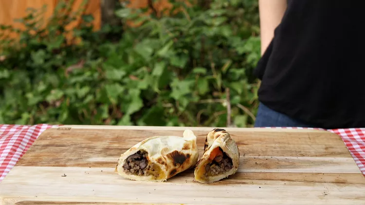
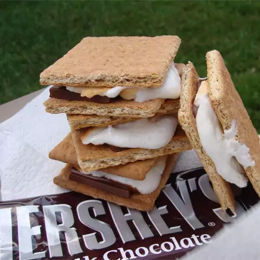

Flaming Burritos

A delicious and fun to make recipe requires zero clean-up - the perfect camping food!
This recipe is based on a tried-and-true camp fire tradition.
Ingredients
- 1 pound ground beef
- 1 (15 ounce) can black beans, drained and rinsed
- 1 large red bell pepper, chopped
- 4 (10 inch) flour tortillas
- 4 cups shredded mozzarella cheese, divided
Steps
- Heat a large nonstick skillet over medium heat.
Add ground beef; cook and stir until browned, 5 to 10 minutes.
Stir in black beans and red bell pepper; cook until heated through,
about 5 minutes.
- Cut four 13x13-inch pieces of aluminum foil.
- Place 1 tortilla on each piece of aluminum foil. Spoon beef mixture
in a line down the center of each tortilla. Divide cheese evenly
among tortillas. Fold opposing edges of each tortilla to overlap
the filling. Roll up in the shape of a burrito, sealing ends.
- Rinse and dry 4 half-gallon wax-lined milk cartons. Cut several
1-inch diamond-shaped vents into 2 corners of each milk carton,
near the bottom. Place a wrapped burrito inside each carton.
- Place milk cartons in a safe cooking area outdoors. Light
each on fire at one of the vents; cook until cartons burn down, about
2 minutes. Gently unwrap burritos with heatproof gloves.
S'mores

This snack is warmed over an open flame until melted and gooey for a camping favorite.
S'mores are made with graham crackers, marshmallows, and chocolate.
Not recommended for the stovetop.
Ingredients
- 1 large marshmallow
- 1 graham cracker
- 1 (1.5 ounce) bar chocolate candy bar
Steps
- Heat marshmallow over an open flame until it begins to brown and melt.
- Break graham cracker in half; sandwich chocolate between graham cracker
and hot marshmallow. Allow marshmallow to cool a little before eating.
Campfire Pepperoni Pizza.

The smokey flavor from the wood fire puts a great twist on an old favorite.
This is easy as pie. Doing this over an open fire is easier than you may think.
Ingredients
- 1 pound refrigerated pizza dough
- ¼ cup pizza sauce
- ½ cup shredded mozzarella cheese
- ½ cup sliced pepperoni
Steps
- Place pizza stone on grill directly over wood fire. You may need to
begin by spreading out the wood if the flames are too tall. Roll out the
pizza dough to desired thickness. Place it on the pizza stone and cook 10
minutes on one side until golden.
- Remove from the fire and on the cooked side, spread the pizza sauce in
an even layer over dough leaving about a half inch around the rim of the
pizza dough bare. Sprinkle mozzarella cheese evenly on top of the sauce,
followed by the pepperoni slices.
- Place uncooked side down, back on the pizza stone. Cover with a foil
tent and cook until cheese has melted, about 10 minutes more. Transfer
pizza to a cutting board and let cool slightly before cutting and serving.